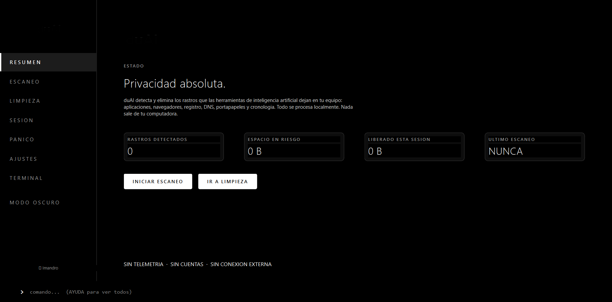

Herramienta de privacidad para Windows que detecta y elimina todo rastro de uso de inteligencia artificial de tu computadora.
Todo lo que necesitas para proteger tu privacidad de la IA.
Analiza 30+ objetivos en paralelo. Detecta archivos, historial, registry, DNS y clipboard de herramientas de IA.
Eliminacion selectiva o total. Modo reciclaje, cuarentena o permanente. Preview antes de ejecutar.
Boton de emergencia. Limpieza total silenciosa con un solo clic. Boton flotante always-on-top.
Navegacion aislada para ChatGPT, Claude, Gemini y mas. Cookies y cache se destruyen al cerrar.
Ejecuta OpenCode, Claude Code, Codex CLI y mas en un sandbox aislado. Al salir se borra todo.
duAI se limpia a si mismo. Sin telemetria, sin cuentas, sin conexion externa. 100% local.
Interfaz monochrome. Todo negro o todo blanco.

Tres pasos simples para proteger tu privacidad.
duAI analiza tu sistema en busca de archivos, historial, registro y rastros de herramientas de IA.
Selecciona que eliminar. Modo reciclaje para deshacer, cuarentena para revisar, o permanent para siempre.
Activa limpieza automatica, modo sigilo, y el boton de panico para mantener tu privacidad siempre activa.
30+ herramientas de IA y rastros del sistema.
Un solo archivo. Sin instalacion. Sin dependencias.
O compila desde el codigo fuente:
git clone https://github.com/Imandro/duAI.git && cd duAI && python build_exe.ps1
duAI (Don't Use AI) es una herramienta de privacidad para Windows que detecta y elimina todo rastro de uso de inteligencia artificial de tu computadora. Escanea archivos, historial, registro, DNS y clipboard.
Totalmente. duAI es 100% local, no tiene telemetria, no se conecta a internet, y no necesita cuentas. El codigo es open source y puedes revisarlo en GitHub.
Archivos de configuracion de IA, historial de navegacion relacionado con IA, entradas de registry, cache DNS, clipboard, timeline de Windows, archivos recientes y prefetch.
La mayoria de funciones no requieren admin. Solo Prefetch y el bloqueo de hosts requieren permisos elevados, y se omiten automaticamente si no los tienes.
Si. duAI funciona con Windows 10 y Windows 11.
Si usas el modo reciclaje, los archivos van a la papelera de reciclaje y puedes recuperarlos. El modo cuarentena guarda una copia con manifest. El modo permanente no se puede deshacer.
Ejecuta una limpieza total silenciosa de todos los rastros de IA. Cierra pestañas de IA en el navegador, elimina archivos, limpia registry, DNS y clipboard. Un solo clic.
Aisla herramientas de IA como OpenCode o Claude Code redirigiendo sus variables de entorno a una carpeta temporal. Al cerrar la ventana, todo se borra automaticamente.
Si. duAI esta bajo licencia MIT. Puedes ver, modificar y distribuir el codigo fuente libremente.